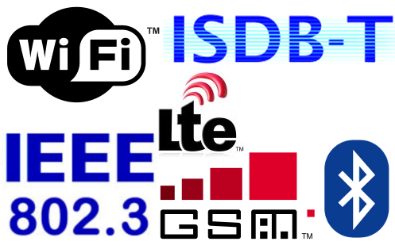
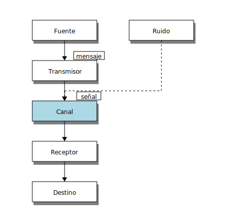
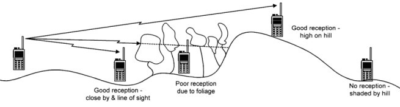

Sistemas de comunicación digitales
Contenido
1. Sistemas de comunicación digitales¶
Los sistemas y tecnologías de comunicación digital han tenido un crecimiento exponencial en las últimas decadas y podemos encontrarlos en múltiples aspectos de nuestra vida diaria.
Hoy en día gran parte de los sistemas de comunicacion están basados en la transmisión de señales eléctricas
¿Puedes reconocer algunos de los estándares que se muestran a continuación?
{kind=link}
1.1. Modelo de Shannon¶
El modelo de Shannon define los elementos básicos de un sistema de comunicación
{kind=link}
Mensaje: Es la información que deseamos enviar
Transmisor: Convierte el mensaje a impulsos eléctricos usando un sensor/transductor, luego lo transforma, codifica y transmite. El objetivo de la transformación es hacer la transmisión lo más eficiente posible
Señal Es el mensaje convertido por el transmisor tal que puede viajar por el canal hacia el receptor
Canal Es el medio por el cual se envian las señales eléctricas del transmisor hacia el receptor
Receptor Captura la señal del transmisor, aplica las transformaciones inversas y lo convierte a su forma original por medio de un actuador/transductor
Ejemplo: Walkie-talkie con modulación FM
Identifica los siguientes conceptos:
idea, voz, microfono, audio, señal modulada, aire, parlante, oido
con los bloques del modelo de Shannon
Reflexione
¿Puedes repetir este ejercicio para los estándares que mencionamos anteriomente?
Canal
En general el canal actua como un atenuador de la señal
La atenuación es mayor mientras más “largo” sea el canal
Ciertas distorciones pueden ser corregidas por el receptor usando ecualización
Ruido
El ruido es una corrupción o interferencia indeseable que modifica la señal cuando esta pasa por el canal
Por lo general aleatorio, puede reducirse para nunca eliminarse por completo
En muchos casos quien pone los límites en los sistemas de comunicación